I'm a part time poet and a mathematician. I love to explore new paths, to be curious and continually learn. I hope to make a positive difference in this world, and to do so where my passion lies: promoting the growth of renewable and sustainable energy systems. I hope to help clean up our energy sources, to help us become more and more energy efficient. I want to address today's issues with lasting, flexible fixes. In my free time these days, I play basketball, try to learn the ukulele, discover more poetry, more music, and explore San Francisco. As a lifelong goal, I strive to live with the optimism of the poet Whitman:
Be not discouraged - keep on - there are diving things well envelop'd; I swear to you there are divine things more beautiful than words can tell.
NBA Paths to the Playoffs
Beneath is my personal project work to create a visualization that charts the progression of an NBA team's season. Each graph charts the win-loss path of a team and uses the background to provide a comparison to past seasons as well as historical playoff probabilities. The graphs below therefore represent a mixture of both historical and current NBA season data. The major components are the background, the highlighted paths and the color gradients.
Background: The underlying values of the backdrop come from a matrix of the historical probability that an NBA team made the playoffs, given that the team had y wins and x losses. Each number inside each box indicates this exact probability. The data were collected from basketball-reference.com for the 1978/79 season (the year of the NBA/ABA merger) through the 2016/17 season.
Paths: As a layer on top of these historical probabilities, there is a highlighted path which shows the current progress of a team moving through the 82 game season. At a glance, teams that rise to the top left quadrant have true championship hopes, whereas teams stuck in the bottom right are simply waiting for the next LeBron.
Color Gradients: Every background color gradient comes from the corresponding team's colors. The top left color represents a 100% historical probability of making the playoffs given the team's record, the middle color represents a 50% historical probability and the bottom right color represents a 0% historical probability. Every path color gradient uses the same historical probabilities as its base values and uses the simple green = 100%, yellow = 50%, red = 0% spectrum, while shading the in-between values appropriately.
The 2016 U.S. Presidential Election left people on both sides of the political aisle very surprised. Many media outlets, pollsters and political predictors hadn’t seen it coming. Since then, several articles have investigated the relative shock of the election using the frameworks of social media bubbles, news bubbles and socio-economic/racial bubbles.
Here, I will discuss a similar framework called migratory bubbles. As a Texan living in San Francisco, people often tell me they would move to Texas, “but only Austin!” They see a parallel liberal haven and would feel comfortable moving there. This desire to move somewhere politically similar is only anecdote, but I want to see whether it’s indicative of a wide-ranging phenomenon that we act upon when moving to a new city.
To begin answering these questions, I obtained a few datasets: the most recent U.S. County-to-County migration outflows (2010-2014), and a Geo-Political County Level dataset including county shapefiles, county demographics and county vote information over the past 3 national Congressional and Presidential elections (2012, 2014, 2016). To visualize the data, I combined the datasets by county id, then mapped the results by Census-defined region. On the maps below, each arc connects a previous county of residence with a current county of residence. Larger county-to-county migration flows are represented by larger arcs.
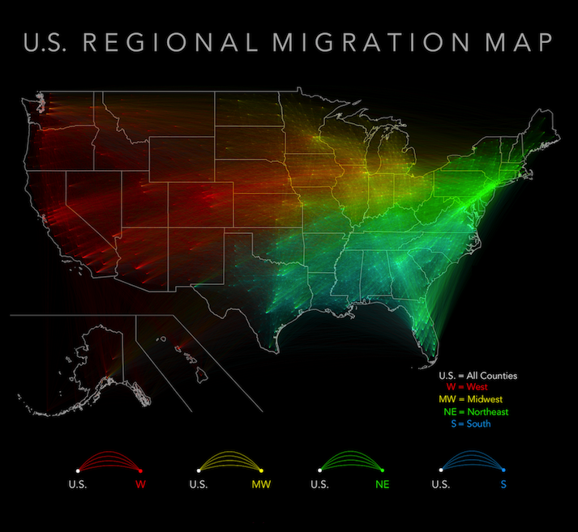
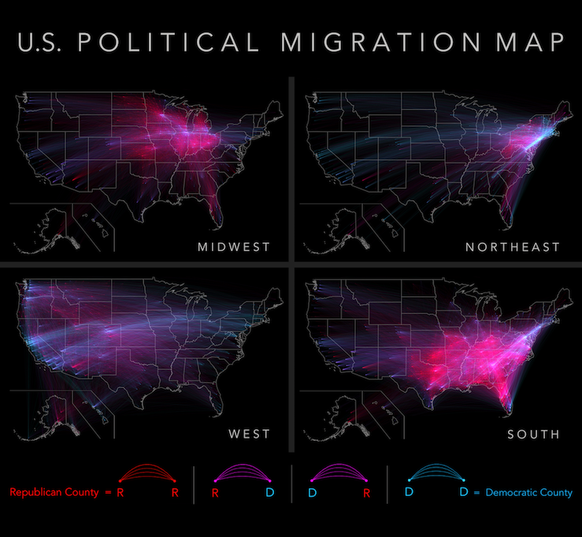
Regional Bubbles The resulting regional map on the left has one major takeaway: most migration is intra-regional. Only a few areas, like the aqua-marine of Southern Florida or the red-yellow split of Milwaukee, have a significant amount of inter-regional migration. In some sense, this is our first order bubble. When moving to new places, we stay close to previous homes. It’s often what makes the most sense from an economical and social perspective.
Political Bubbles Looking now at the map on the right, the most notable and colorful political features are (1) the broad swaths of red underlying matrices (2) the numerous blue cross-country arcs and (3) the glowing blue Eastern seaboard of Boston, New York City, and Washington D.C.
At a glance, these arcs help reveal the growing urban vs. rural divide already noted in other analyses. The maps also lend credence to the existence of flyover states and coastal elites in county-to-county migration. While there is a significant amount of coast to coast movement, and interior to interior movement, the coast to interior movement (& vice versa) is limited.
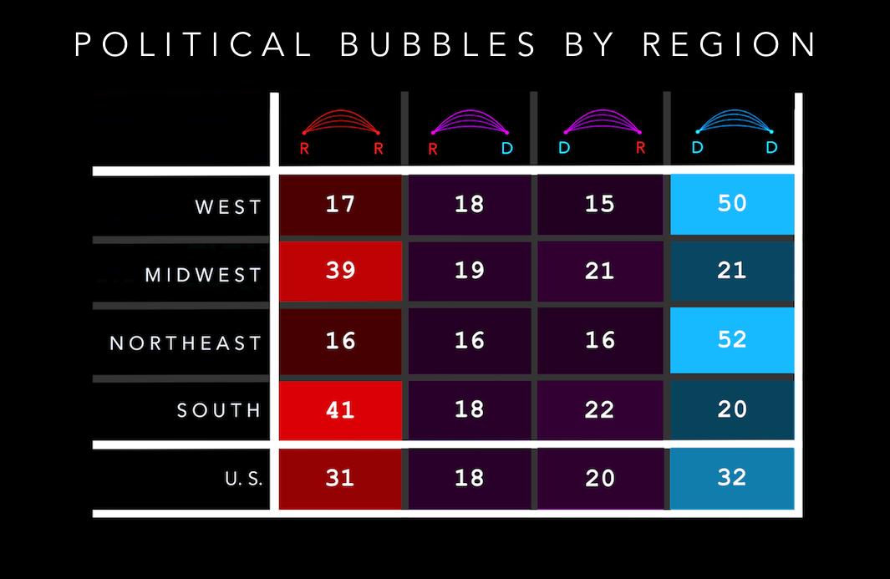
Getting down into the data, we can start to see whether certain regions are better/worse than the national average at getting out of their bubbles. In the chart above, we find that 31% of U.S. migration occurred from R→R, and 32% occurred from D→D. This shows that nearly 2/3 of all migration occurred within political bubbles on each side of the political spectrum.
More than 50% of all people from the West and Northeast migrated from a liberal county to another liberal county. About 40% of all people from the South and Midwest migrated from a conservative county to another conservative county. These are the two dominant versions and visions of the U.S: the Southern/Midwestern Republican base (flyover country) and the Western/Northeastern base (coastal elites). It seems that when moving to new cities, we do in fact tend to stay within our own bubbles.
The Silicon Valley world of top tech companies and startups often comes under fire for being too male, too white and too wealthy. For several years, the privileged group of tech workers in the Bay has continued to gentrify many San Francisco neighborhoods. Subsequently rising rents and new, high-end restaurants/shops have priced people out of the city and left many dispossessed. This is a pressing issue, and I want to use tech to help solve it. To begin the analysis, I focused on the interaction of tech and non-tech communities in various SF neighborhoods by the following method:
Data Collection & Classification: Using LotaData’s proprietary datasets, I gathered device-specific geolocation timestamps on ~100K devices. After clustering the data, I determined a likely work location and a likely home city for about 25% of the devices. From this sample, I compared two broad groups of San Francisco devices: tech-workers and non tech-workers. From the location trails of each device, I pinpointed a list of places visited (e.g. restaurants, airports, etc.) and events attended (e.g. concerts, basketball games, etc.). This list led to a classification of what types of places and what types of events a particular device tends to visit.
Network Creation: With these vectorized classifications, I created a similarity scoring method and calculated the similarity score between all devices. From the scores, I created a series of k-NN (k-nearest neighbors) networks. In the network, two nodes (or devices) are connected by an edge. For every node, there is an edge between itself and the k most similar other nodes. Further, the length of each edge is inversely proportional to the similarity score. This means similar devices are grouped close together and dissimilar devices are farther apart.
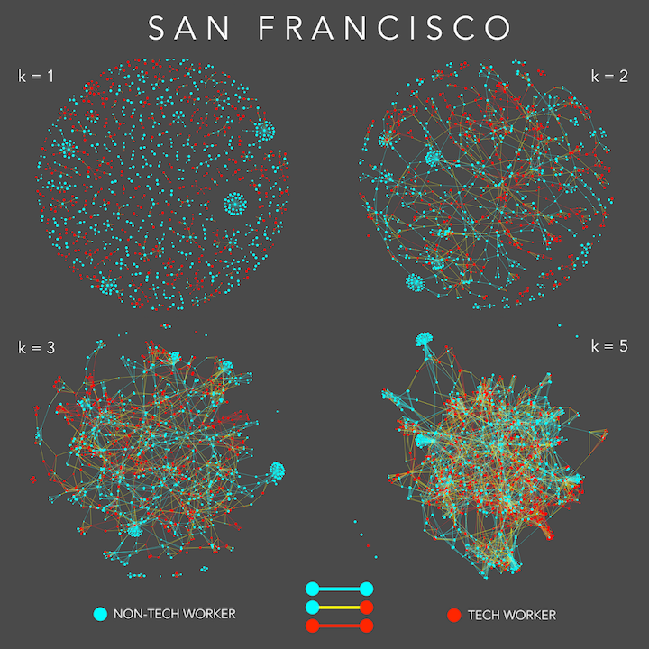
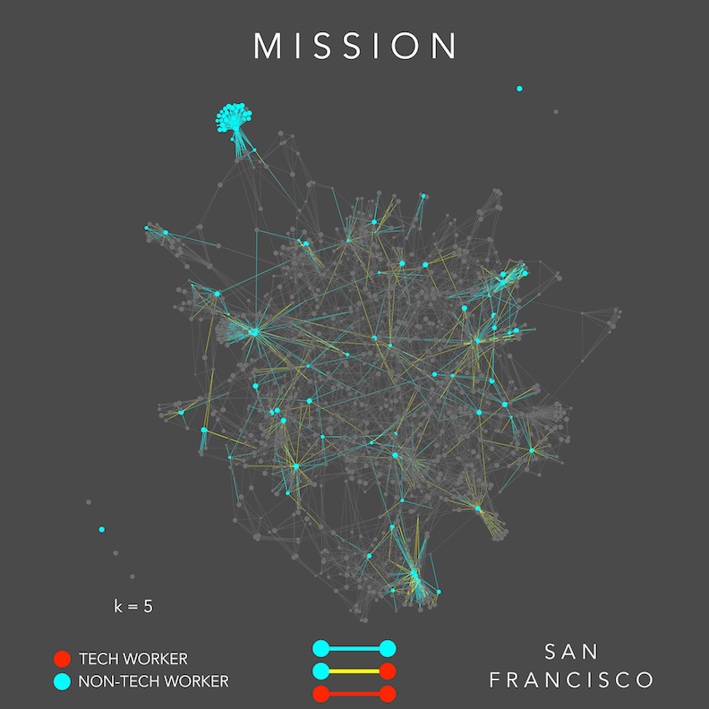
As seen in the above left plot, if we set k = 1, we don’t have too many connections and we have a simple, low-dimensional graph. If k = 50, we’ll have a dense, high-dimensional graph. Another feature that jumps out is the presence of a few clearly defined cyan clusters. These clusters represent cliques that rarely extend past their own grouping.
The middle plot of the Mission neighborhood in San Francisco highlights one of these main clusters. As one of the main spots of gentrification in the city, this cluster makes intuitive sense. There is a large influx of tech workers in that area, although there remains a strong Latino and minority presence in the neighborhood. In the fight to preserve the Latino character of the Mission, there seems to be a strong pocket that remains separate from the tech community.
With this idea of assimilation in mind, I took the connectivity of the graph and calculated a weighted assimilation score between tech and non-tech groups. This value represents how much one community has behaviorally assimilated with the other. A high score means the 2 groups behave similarly, while a low score means there is a wide behavioral gap between groups. I applied the metric to 7 San Francisco neighborhoods and 3 top tech companies (Google, Apple & Facebook) to obtain the scale below.
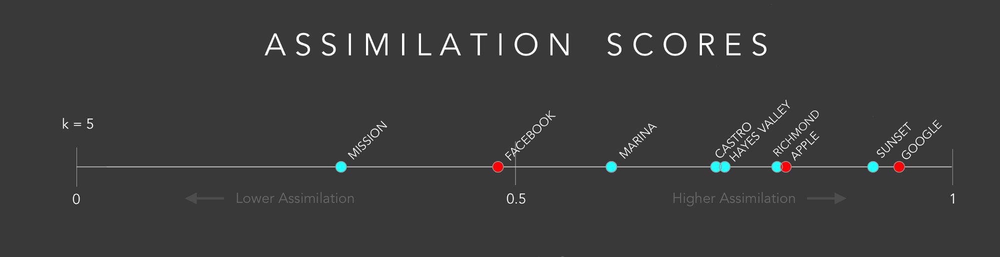
Amongst the 3 major companies, Google employees had the highest assimilation score, followed by Apple and Facebook. The differences between these companies could have something to do with the personalities of people hired at each of the companies. It could have something to do with age, gender, ethnicity or a whole host of other factors.
Amongst neighborhoods, the Mission and the Marina had the lowest assimilation scores, but for very different reasons. As mentioned before, there is a broad gap in the Mission between the minority groups (e.g. Latino, Black and immigrant communities) and the new wave of tech workers. In the predominantly white and wealthy Marina community, this gap is more likely a difference between finance workers (i.e. non-tech for this analysis) and tech workers.
This type of analysis absolutely requires more complete data and finer tuning. Moving forward, I believe a more rigorous and more comprehensive network analysis of workers in the Bay Area can help identify and address the needs of our communities. We can push specific companies and their employees to act in a more responsible and selfless manner. To help preserve and enrich the neighborhoods in San Francisco, we can implement actual solutions that mitigate the negative consequences of gentrification.
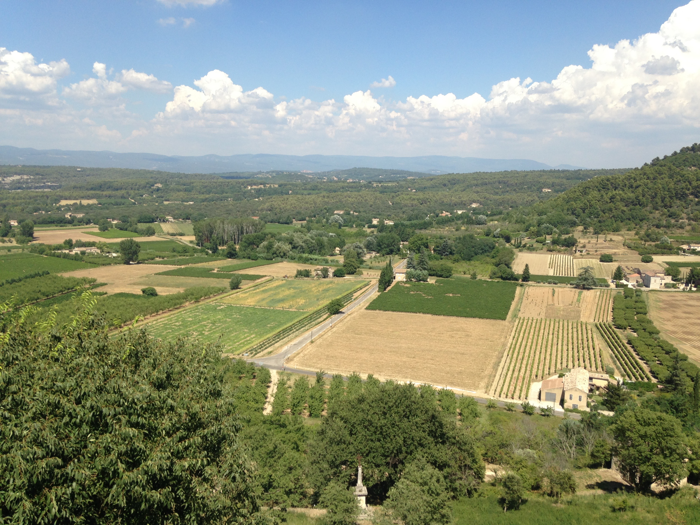
Traveling Salesman Problem
TSP Algorithms
The visualizations shown below grew out of the difficult personal experience of tightly budgeting a long backpacking trip through Europe. To save money, it seemed advantageous to travel in the manner of a greedy algorithm, optimizing for distance (i.e. going to the first closest destination, then all successively closest destinations). The logic assumes that to minimize the distance is also to minimize the overall travel cost. In reality, however, there are several factors which could confound this assumption: promotional travel deals, seasonal price variations, and unusual transportation routes, amongst others.
A brief look into the problem area showed me that I'd come across a variation of the Traveling Salesman Problem (TSP). The problem asks, "Given a list of cities and distances between them, what is the shortest way for a salesman to visit each city exactly once and return to the original city?" My version simply replaces "distance" by "cost to visit" and is a mathematically identical formulation. Therefore, I gathered travel cost data between the 21 cities I planned to visit, and began to solve the problem. I used two basic optimization approaches: a greedy algorithm and the 2-Opt algorithm.
Greedy Algorithm: This optimization procedure simply took my city of origin, Paris, and initially went to the cheapest place, Brussels. Then, it successively went on the cheapest trip to the next city, ending with a trip that would cost 1676€. This was a decent start, but the nature of the greedy algorithm is myopic and ends at a local minimum with no guarantee of having found the optimal solution. This led me to 2-Opt.
2-Opt: The 2-Opt solution to the TSP aims to fix the narrow sight of the greedy algorithm by doing a corrective survey of the initial greedy groundwork. Visually, any two paths that would cross each other in the greedy solution get uncrossed, and if the change results in a cost improvement, the swap is kept. Therefore, a functional 2-Opt solution can at best improve upon the local minimum found by the greedy algorithm, and at worst, be the same.
TSP Slopegraphs
The slopegraphs found below show a bit of the work I put into creating a useful visualization of different possible paths through Europe. Visually, the highlighted paths in green represent the best cost saving swaps. On the left, for instance, we find that going to Ravello from Florence is 360€ cheaper than going from Zagreb. Vice versa, the higlighted red paths represent swaps that lose money - on the left, getting to London from Copenhagen instead of Paris is more expensive.
The visualization on the left aims to show that the shortest path through these 21 European cities, as found by the 2-Opt algorithm minimizing distance, is a much more expensive option than the cheapest path, as found by 2-Opt algorithm minimizing cost. On the right hand side, the visualization demonstrates that the greedy algorithm's path, while somewhat effective, also does not result in the cheapest path. Instead, it can and should be tweaked to save some money. For a traveler on a tight budget, finding even these small savings can make all the difference on a trip.
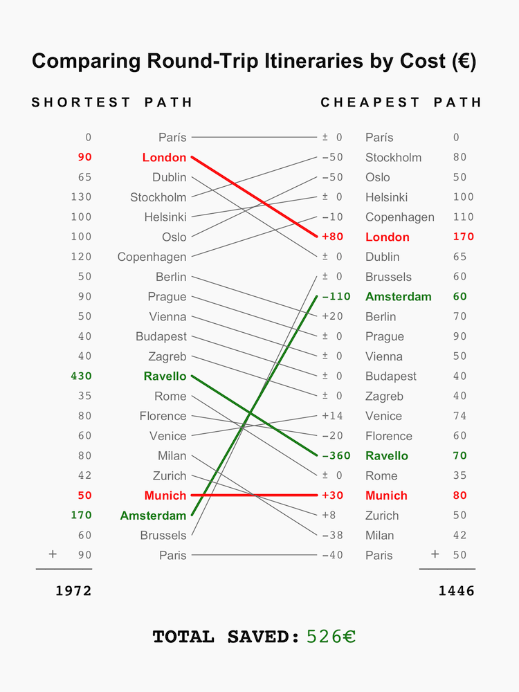
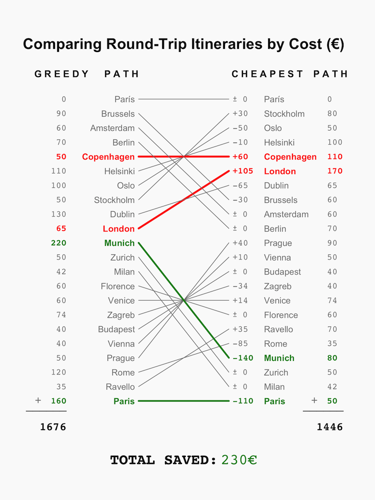
TSP Assumptions
In order to create the visualizations, I made a few assumptions about the data that simplified the problem, making it more of a theoretical and visual exercise than a practical solution to the travel planning issue. Here are a few of the more pressing limitations.
Monthly Averages: I chose to collect travel cost data between these cities only for the month of September in 2015 because it was most readily available. I used Google Flights, Rome2Rio, RailEurope and Eurolines as my sources and simply took monthly averages of the cheapest transport option on each day. This gives a poor picture of true cost since costs fluctuate by days, weeks, months, seasons and are subject to special offers.
Scheduling: In a similar vein, the use of monthly averages does not incorporate the issue of planning in almost any way. I did not try to account for the number of days that might be spent in any location, so the travel costs do not reflect a true schedule.
Symmetry: Lastly, I assumed that traveling from A → B costs the same as B → A, a symmetry that does not always exist in the real world. While this made the data collection and mathematics simpler, it is not a true reflection of travel costs.
Poetry Analysis
LDA Algorithm
This section dives into a textual analysis of a group of 48 personal poems which I have compiled into a book called In A Word that you can find here. As I began to edit my poems, I began to wonder how exactly each of the words were related to each other. I began to wonder if there were a discernible pattern that I could elicit with mathematics. As it turns out, a common text analysis algorithm called Latent Dirichlet Allocation (LDA) can help determine relationships between words in a text.
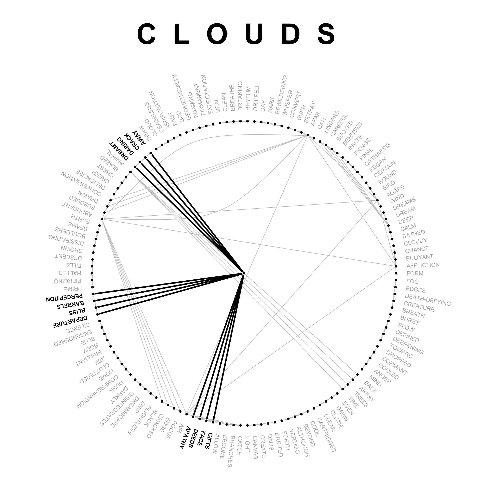
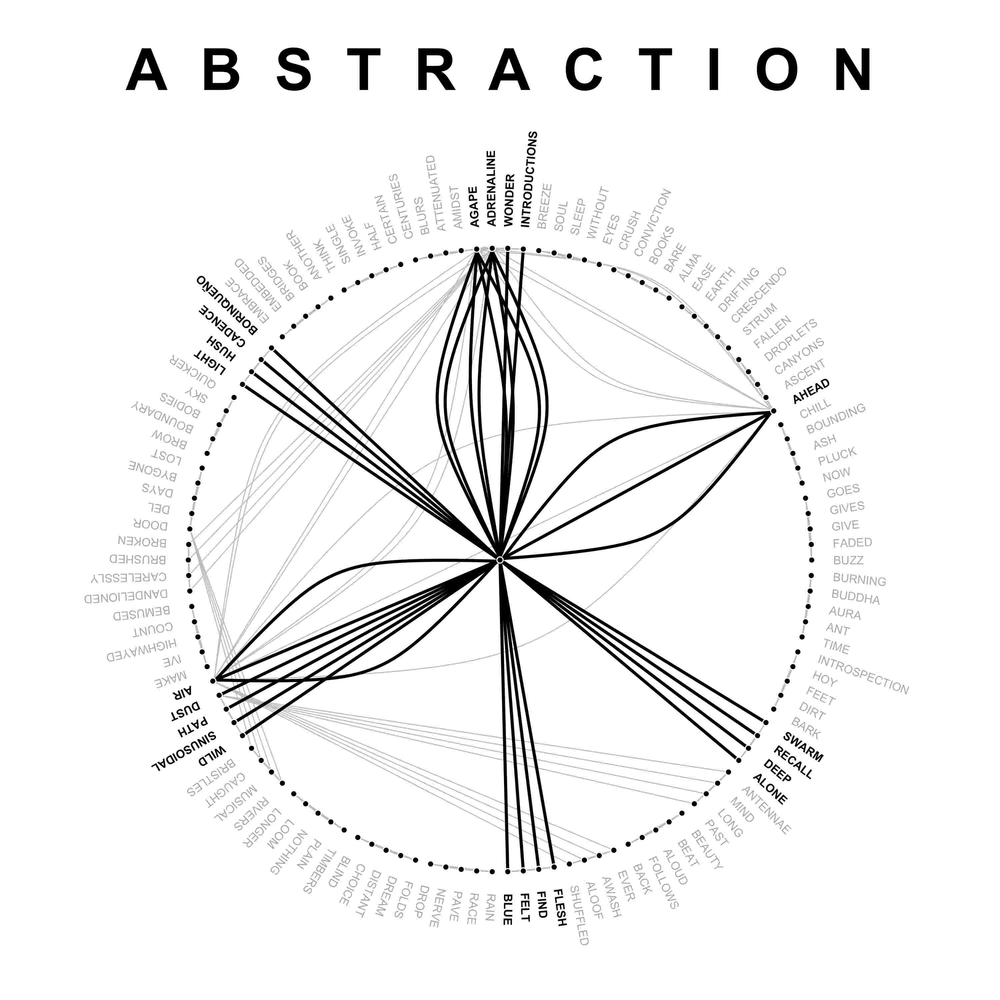
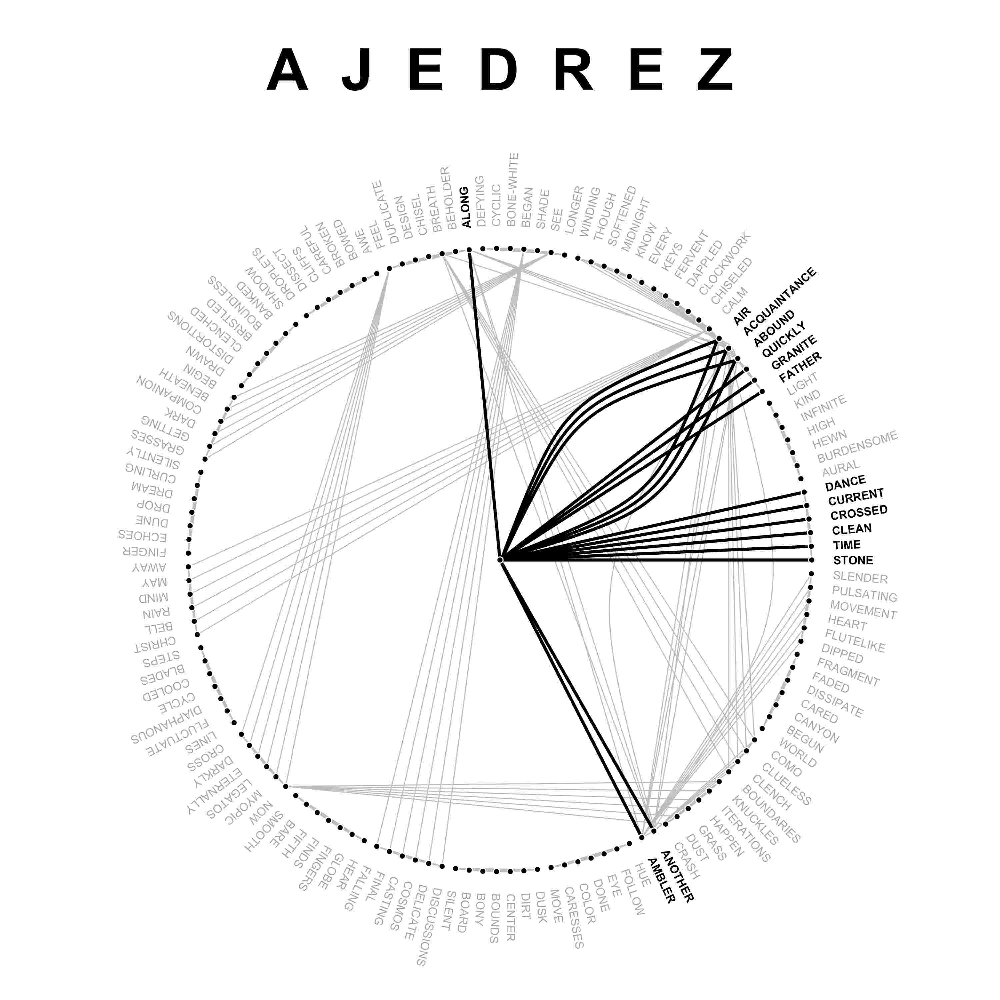
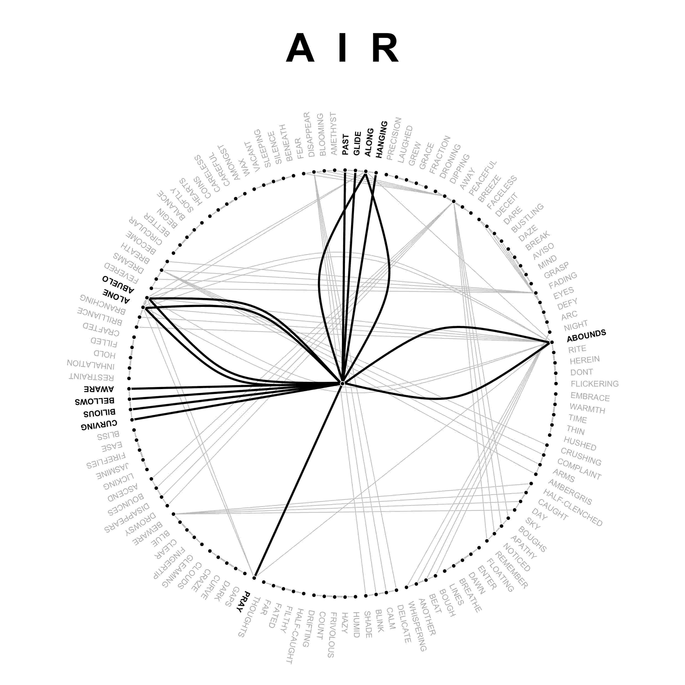
The LDA algorithm takes a body of text and splits it into however many topics (i.e. groups) that the user believes are structured in the text. Analysis of LDA can give likelihoods of whether the model fit and the number of topics chosen actually represent the truth behind the data. The visualizations above come from 12 poems each which I determined to have 23 topics. The point in the center represents the word with the most connections to other words, and each line represents such a connection.
Tree of Trees
Arbourtrary Visualization
Throughout my life, I've spent hundreds of hours climbing all varieties of trees. There's nothing quite like the smooth feeling of acension, leaning to hang with the wind and the leaves and the sun. At Stanford, I had the amazing luck to be in a place with hundreds of types to climb. Every year, I gathered loquats, oranges, lemons and avocados from the campus and spent bright afternoons reading the works of great poets: Langston Hughes, Stephen Dunn, Maya Angelou, Walt Whitman, and Seamus Heaney among others.
Upon realizing how little I knew about the origin of trees or how modern species are related to each other, I decided to do a small project to learn more. I chose 10 of my favorite species of trees that have been important in my lifetime. These were the Quercus virginiana (Texas live oak), Delonix regia - (flamboyan), Salix babylonica - (willow), Roystonea borinquena - (palm tree), Eucalyptus globulus - (eucalyptus) Eriobotrya japonica - (loquat), Citrus limon - (lemon), Citrus orange - (orange), Populus deltoides - (cottonwood), and Sequoia sempervirens - (redwood).
These were all species that came from my experiences in Texas, Puerto Rico and California. I have climbed at least one tree of each type and in the visualization below I have shown the tallest such tree that I have personally encountered and its approximate height. The phylogenetic tree acts as a tree of trees and a stylized legend to help understand how closely (or not) these trees are related to each other genetically. The oldest and least related to the others is the Redwood tree (240 Million years old), while the two most closely related are the Lemon and Orange trees, two of the youngest trees (~20 Million years old). In the visualization, the varying shades of green indicate how long that type of tree has been on earth - darker green is older.
Work Experience
LotaData
Principal Data Scientist
Fall 2015 - Spring 2017
At LotaData, I grew my skills across the board in a rapid, positive start-up environment. The company focused on gleaning insights from mobile device geo-location signals. By mapping mobile device location to actual places visited and events attended, I built real world profiles for millions of devices.
Primarily, I was in charge of the data science involved with profile creation and visit inference. Additionally, I maintained the no-SQL database, created schemas for internal data indexing, produced API endpoints, and helped design the customer-facing geo-dashboard. I ran client meetings to determine necessary features and gauge market interest. I created data visualizations for internal use, VC presentations and client outreach. And in my data journalist role, I wrote several articles embedded with my own data visualizations (some of which were published by marketing and govtech sites).
Specifically on the data science side, I ran clustering models to determine points of interest, potential work areas and potential home areas. I created device networks based on vectorized internal classifications of places, events and neighborhoods. I then used graph analysis on these large networks to infer behavioral segments and classify similar devices.
Carbon Lighthouse
Data Scientist
Summer 2014
At Carbon Lighthouse (an awesome company that performs energy efficiency projects on large buildings), I was given the opportunity to delve into building energy usage data. My goal was to help CL ensure that it was delivering true energy savings to its customers. To accomplish this, I built a Measurement & Verification tool in R for the engineering team that made predictions based on multilinear regression models.
I performed extensive factor analysis and used stepwise Akaike Information Criterion (AIC) regression to find predictive models that minimized complexity while explaining much of the variance of building energy use. Next, I used bootstrapping on the root mean squared error (RMSE) and R-squared values of the models to ensure autocorrelation in the data did not affect the validity of the models. I also tested for overfitting of the model by sampling various subsets of training data, predicting onto remaining test data and comparing RMSE values.
Holistically, the tool was built to be flexible enough for the engineering team to input building specific values (bldg. schedule, weather, building changes, etc.), to build their own models (and test them with the methods from the previous paragraph), and to receive graphical and statistical outputs at the end. These outputs let the team know whether the building overperformed, underperformed or performed exactly as expected one year after the implementation of an energy efficiency project.
Samsung
Operations Analyst
Summer 2013
I spent this summer as the inaugural intern for the Open Innovation Center, a branch of Samsung that aims to work with Silicon Valley start-ups through partnerships, mergers, acquisitions or incorporation into the Samsung Start-up Accelerator. In addition to meeting with several start-ups, I was tasked with recommending a strategy for Samsung in the mobile messaging app space. In order to evaluate the mobile messaging app companies rigorously, I collected as much data as I could on approximately 30 such companies.
The data varied from number of users to years since inception to money raised to other details. With this categorical and continuous data, I ran Multiple Correspondence Analysis (MCA) to understand what combination of factors were most important, and calculated MCA scores in order to rank the various companies. After ranking the apps in this manner, I grouped the apps according to their scores and was able to make inferences about each group.
In the end, I chose to present two recommendations: one from the well established group with tens of millions of users and one from the early stage start-up group that showed promising features and quick user adoption. The first recommendation was to acquire WhatsApp (Facebook did so about 6 months later) and the second was to acquire MightyText, an app with a sleek interface and solid cross-platform integrability that has continued to show promise.
TXU Energy
Energy & Finance Analyst
Summer 2012
My two main summer projects dealt separately with profitability and environmental initiatives for the Texas electricity provider TXU Energy. In my first project, I built a scenario analysis tool in Excel to gauge the profitability of swapping customers from obsolete electricity plans to current plans. In the tool, customer retention rate, expected natural gas prices, and expected electricty usage (among other variables) could be modified to reflect various conditions.
In my second project, I worked to help renew TXU's partnership with SolarCity, a partnership aimed at getting TXU customers to install solar panels. My role included colloboration on website design and using Survey Monkey on a test group to help determine which wording emphases could most effectively promote the program. I wrote material emphasizing different motivations, ranging from saving the environment to reducing one's carbon footprint to saving money in the long run. In the end, the message which resounded with the test group most (i.e. in a statistically significant manner) focused on saving money, whereas the message with the least effect, unsurprisingly, focused on carbon footprints.